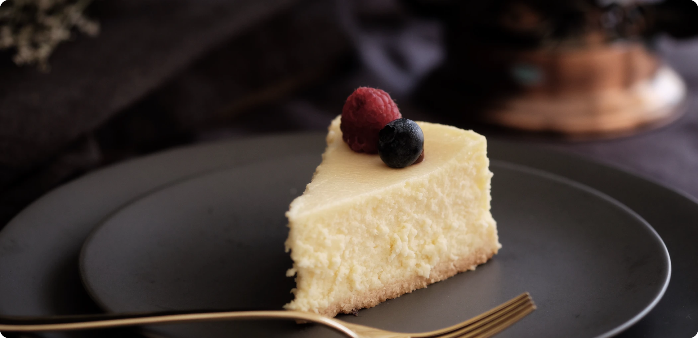

Look no further for a creamy and ultra smooth classic cheesecake recipe! Paired with a buttery graham cracker
crust, no one can deny its simple decadence. For the best results, bake in a water bath.

Yields
12 Servings
prep time
45 minutes
cook time
1 hour
total time
7.75 hours
Ingredients
Graham Cracker Crust
1 and 1/2 cups (150g) graham cracker crumbs (about 10 full sheet graham crackers)
5 Tablespoons (70g) unsalted butter, melted
1/4 cup (50g) granulated sugar
Cheesecake
four 8-ounce blocks (904g) full-fat cream cheese, softened to room temperature
1 cup (200g) granulated sugar
1 cup (240g) full-fat sour cream, at room temperature
1 teaspoon pure vanilla extract
2 teaspoons fresh lemon juice (optional, but recommended)
3 large eggs, at room temperature
topping suggestions: salted caramel, lemon curd, strawberry topping, chocolate ganache, red wine
chocolate ganache, fresh fruit, whipped cream, or raspberry sauce (recipe in notes)
Instructions
Adjust the oven rack to the lower-middle position and preheat oven to 350°F (177°C).
Make the crust: Using a food processor, pulse the graham crackers into crumbs. Pour
into a
medium bowl and stir in sugar and melted butter until combined. (You can also pulse it all together
in
the food
processor.) Mixture will be sandy. Press firmly into the bottom and slightly up the sides of a
9-inch or
10-inch springform pan. No need to grease the pan first. I use the bottom of a measuring cup to pack
the
crust down tightly. Pre-bake for 8 minutes. Remove from the oven and place the hot pan on a large
piece
of aluminum foil. The foil will wrap around the pan for the water bath in step 4. Allow crust to
slightly cool as you prepare the filling.
Make the filling: Using a handheld or stand mixer fitted with a paddle attachment, beat
the
cream cheese and granulated sugar together on medium-high speed in a large bowl until the mixture is
smooth and creamy, about 2 minutes. Add the sour cream, vanilla extract, and lemon juice then beat
until
fully combined. On medium speed, add the eggs one at a time, beating after each addition until just
blended. After the final egg is incorporated into the batter, stop mixing. To help prevent the
cheesecake from deflating and cracking as it cools, avoid over-mixing the batter as best you can.
Prepare the simple water bath (see note) Boil a pot of water. You need 1 inch of water
in
your roasting pan for the water bath, so make sure you boil enough. I use an entire kettle of hot
water.
As the water is heating up, wrap the aluminum foil around the springform pan. Pour the cheesecake
batter
on top of the crust. Use a rubber spatula or spoon to smooth it into an even layer. Place the pan
inside
of a large roasting pan. Carefully pour the hot water inside of the pan and place in the oven. (Or
you
can place the roasting pan in the oven first, then pour the hot water in. Whichever is easier for
you.)
Bake cheesecake for 55-70 minutes or until the center is almost set. When it’s done, the center of
the
cheesecake will slightly wobble if you gently shake the pan. Turn the oven off and open the oven
door
slightly. Let the cheesecake sit in the oven in the water bath as it cools down for 1 hour. Remove
from
the oven and water bath, then cool cheesecake completely at room temperature. Then refrigerate the
cheesecake for at least 4 hours or overnight.
Use a knife to loosen the chilled cheesecake from the rim of the springform pan, then remove the
rim.
Using a clean sharp knife, cut into slices for serving. For neat slices, wipe the knife clean and
dip
into warm water between each slice.
Serve cheesecake with desired toppings. Cover and store leftover cheesecake in the refrigerator for
up
to 5 days.